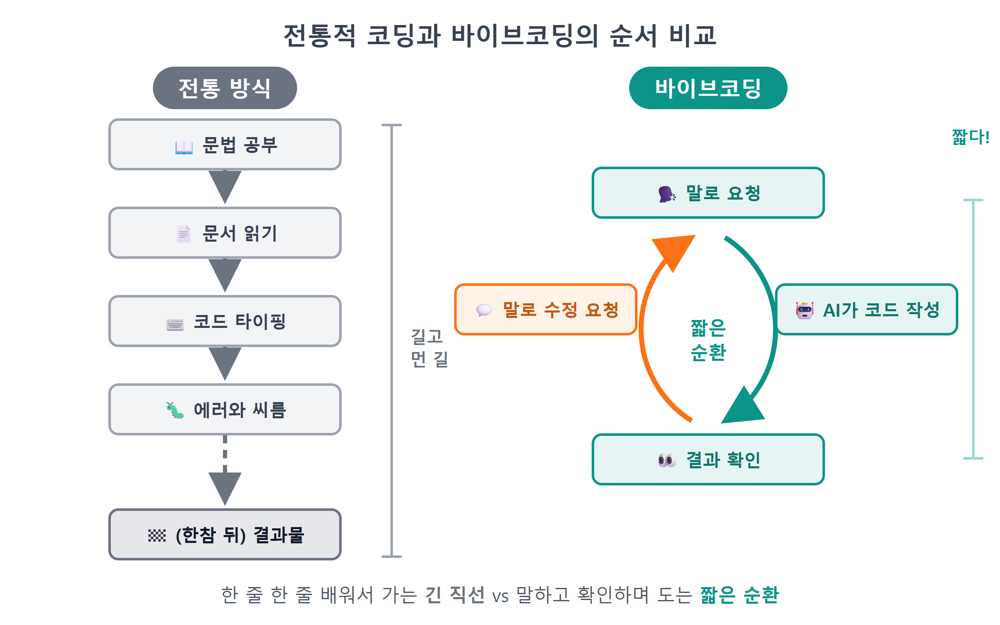
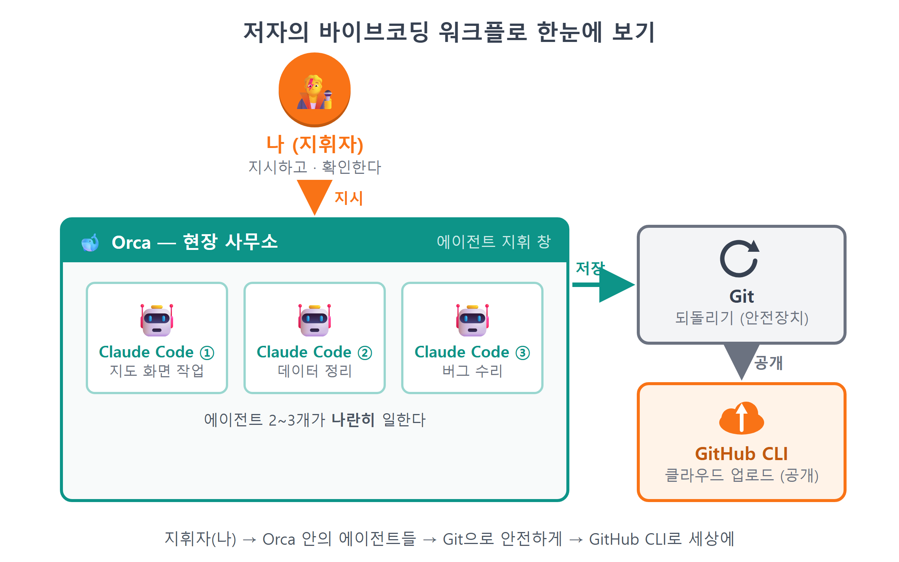
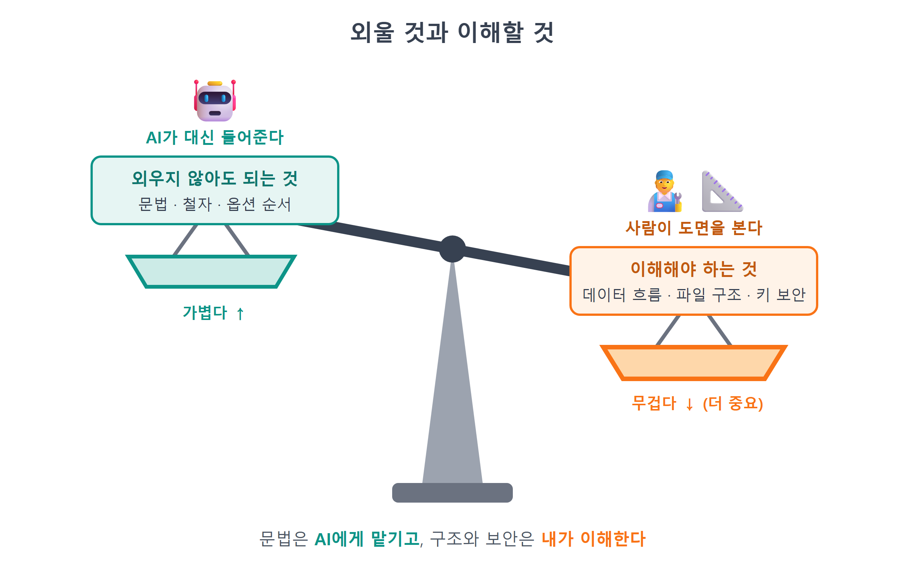
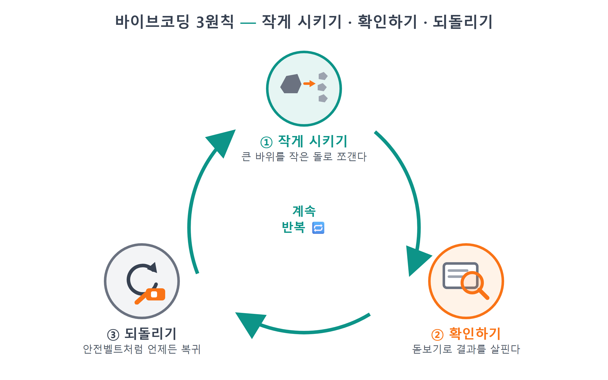

1장 왜 바이브코딩인가¶
이 장에서 배우는 것
- 바이브코딩이 무엇인지, 왜 지금 이 방식으로 배우는 것이 유리한지 이해합니다.
- 저자가 실제로 쓰는 작업 흐름(Claude Code + Orca + Git + GitHub CLI)을 미리 구경합니다.
- "이해하려 노력하되 외우지 않는다"는 이 책의 학습 철학을 익힙니다.
- AI 에이전트에게 일을 시킬 때의 세 가지 마음가짐 — 작게 시키기, 확인하기, 되돌리기 — 을 배웁니다.
- 다음 장부터 설치할 도구 5종이 각각 어떤 역할인지 큰 그림을 그립니다.
1.1 코드를 몰라도 만드는 시대¶
혹시 이런 경험이 있으신가요? "나만의 맛집 지도를 웹으로 만들어 보고 싶다"는 생각이 들어 검색을 시작했는데, HTML을 배워야 하고, CSS를 배워야 하고, 자바스크립트를 배워야 하고, API가 뭔지도 알아야 한다는 글을 읽다가 조용히 브라우저 탭을 닫아버린 경험 말입니다. 프로그래밍을 배우다 포기한 분들의 이야기를 들어보면 대부분 비슷합니다. 만들고 싶은 것은 분명한데, 그것을 만들기까지 배워야 할 것이 너무 많아서 시작조차 못 하는 것입니다.
바이브코딩(vibe coding)은 이 순서를 뒤집습니다. 문법부터 배우고 나서 만드는 것이 아니라, 먼저 만들고 싶은 것을 말로 설명하면 AI가 코드를 대신 작성합니다. 여러분은 결과물을 눈으로 확인하고, 마음에 안 들면 다시 말로 고쳐 달라고 시킵니다. "지도를 화면에 꽉 차게 띄워줘", "마커를 클릭하면 말풍선이 뜨게 해줘"처럼 한국어 문장으로 요청하면, AI 코딩 도구가 실제로 동작하는 코드를 만들어 줍니다.
이 단어는 2025년 초, AI 연구자 안드레이 카파시(Andrej Karpathy)1가 "코드의 존재조차 잊고 분위기(vibe)에 몸을 맡긴 채 개발한다"고 표현한 데서 널리 퍼졌습니다. 처음에는 반쯤 농담이었지만, 지금은 실제로 많은 개발자와 비개발자가 이 방식으로 소프트웨어를 만들고 있습니다. 이 책의 원고와 예제 앱 역시 상당 부분 바이브코딩으로 만들어졌습니다.

그림 1.1 — 전통적 코딩과 바이브코딩의 순서 비교
여기서 흔한 오해 하나를 정리합니다. 바이브코딩은 "코딩을 안 배워도 된다"는 뜻이 아닙니다. 정확히 말하면 배우는 순서와 방법이 바뀐다는 뜻입니다. 예전에는 문법을 다 외운 다음에야 뭔가를 만들 수 있었다면, 이제는 만들면서 필요한 만큼 이해하면 됩니다. 운전을 배울 때 엔진의 열역학부터 공부하지 않는 것과 같습니다. 일단 운전대를 잡고 도로에 나가되, 계기판이 무엇을 말하는지, 경고등이 왜 켜졌는지는 알아야 안전하게 다닐 수 있습니다. 이 책이 여러분께 드리려는 것이 그 "계기판 읽는 법"입니다.
그리고 한 가지 더. 이 책에는 복사-붙여넣기가 없습니다. 긴 코드를 책에서 보고 한 글자씩 따라 치는 실습도 없습니다. 대신 매 실습마다 ① AI에게 시키는 프롬프트를 먼저 보여드리고, ② AI가 만들어 준 코드를 함께 읽고, ③ 왜 그렇게 동작하는지 해설한 다음, ④ 브라우저에서 결과를 확인합니다. 타이핑은 AI가 하고, 판단은 여러분이 합니다.
💡 팁
바이브코딩이라는 이름 때문에 "대충 감으로 한다"고 오해하기 쉽지만, 잘하는 사람일수록 요청을 명확하게 하고 결과를 꼼꼼히 확인합니다. 분위기에 맡기는 것은 타이핑일 뿐, 판단까지 맡기지는 않습니다.
1.2 저자의 실제 워크플로 — 이 책은 그 방식 그대로 갑니다¶
시중의 많은 입문서는 "교육용으로 정리된 방법"을 가르칩니다. 이 책은 조금 다르게, 저자가 실제 프로젝트에서 매일 쓰는 작업 흐름을 거의 그대로 따라갑니다. 도구는 네 가지 축으로 구성됩니다.
첫째, Claude Code입니다. 터미널에서 실행하는 AI 코딩 에이전트로, 이 책의 주인공입니다. 단순히 코드 조각을 답해 주는 챗봇이 아니라, 프로젝트 폴더 안에서 파일을 직접 만들고, 고치고, 명령어를 실행하고, 에러를 읽고 스스로 수정하는 "에이전트"입니다. 여러분이 "검색 기능을 붙여줘"라고 하면, 어떤 파일을 어떻게 바꿀지 계획을 세우고 실제로 바꿉니다.
둘째, Git입니다. 코드의 시간을 되돌리는 타임머신입니다. AI가 코드를 대신 쓰는 세계에서 Git은 선택이 아니라 안전벨트입니다. AI가 만든 수정이 마음에 안 들면, 언제든 마지막으로 잘 동작하던 시점으로 되돌릴 수 있어야 하기 때문입니다. 이 이야기는 3장에서 자세히 다룹니다.
셋째, GitHub CLI(gh)입니다. 만든 코드를 인터넷 저장소인 GitHub에 올리고 관리하는 명령줄 도구입니다. 브라우저에서 버튼을 찾아 클릭하는 대신 명령어 한 줄로 저장소를 만들 수 있어서, AI 에이전트와 궁합이 아주 좋습니다.
넷째, Orca입니다. 여러 AI 에이전트를 나란히 띄워 놓고 지휘하는 데스크톱 앱입니다. 한 에이전트에게 기능 A를 시켜 놓고, 기다리는 동안 다른 에이전트에게 기능 B를 시키는 식의 병렬 작업이 가능합니다. 처음에는 없어도 되지만, 손에 익으면 작업 속도가 눈에 띄게 달라집니다.

그림 1.2 — 저자의 바이브코딩 워크플로 한눈에 보기
이 네 가지가 맞물려 돌아가는 하루를 상상해 보면 이렇습니다. 아침에 Orca를 켜고 Claude Code에게 "어제 만든 지도에 카테고리 필터를 붙여줘"라고 시킵니다. 에이전트가 코드를 고치는 동안 커피를 내리고 돌아와서, 브라우저로 결과를 확인합니다. 마음에 들면 Git으로 저장(커밋)하고 GitHub에 올립니다. 마음에 안 들면 "버튼 색이 너무 튀는데 차분하게 바꿔줘"라고 다시 시키거나, 아예 되돌리고 요청을 다르게 써 봅니다. 코드를 한 줄도 직접 타이핑하지 않은 날도 많지만, 무엇을 만들지 결정하고 결과를 판정하는 것은 언제나 사람의 몫입니다.
이 책의 1부(2~6장)는 정확히 이 워크플로를 여러분의 윈도우 PC에 그대로 세팅하는 과정입니다. 남의 작업실 구경으로 끝나지 않고, 여러분의 작업실이 됩니다.
1.3 이해하려 노력하되, 외우지 않는다¶
AI가 코드를 다 써 준다면, 우리는 무엇을 배워야 할까요? 이 책의 대답은 한 문장입니다. 이해하려 노력하되, 외우지 않는다.
외우지 않아도 되는 것부터 말씀드리겠습니다. 함수 이름의 정확한 철자, 괄호와 세미콜론의 위치, API 옵션의 나열 순서 같은 것들입니다. 예전 프로그래밍 학습에서 시간을 가장 많이 잡아먹던 부분인데, 이제 이런 것은 AI가 사람보다 훨씬 정확하게 기억합니다. 카카오지도에서 마커를 만드는 클래스 이름이 Marker인지 MapMarker인지 헷갈려도 전혀 문제없습니다. AI에게 시키면 되니까요.
반대로 이해해야 하는 것은 구조와 흐름입니다. 이를테면 이런 것들입니다. "내 앱은 장소 데이터를 어디에 저장하고 있지?" "지도에 마커가 그려지기까지 어떤 순서로 코드가 실행되지?" "API 키는 왜 코드에 직접 쓰면 안 되지?" 이런 질문에 대략이라도 답할 수 있으면, AI가 만든 코드가 이상할 때 알아챌 수 있고, 무엇을 고쳐 달라고 해야 할지 정확히 말할 수 있습니다.
비유하자면 여러분은 건축주이자 현장 감독입니다. 벽돌을 직접 쌓는 법(문법)은 몰라도 되지만, 도면(구조)을 읽을 줄은 알아야 합니다. 도면을 못 읽는 건축주는 시공사가 방 하나를 빼먹어도 완공식 날까지 모릅니다. 이 책의 코드 해설이 길지 않으면서도 꼬박꼬박 등장하는 이유가 이것입니다. 우리는 코드를 "채점"하러 읽는 것이 아니라 "도면을 확인"하러 읽습니다.

그림 1.3 — 외울 것과 이해할 것
그래서 이 책의 실습에는 "설명 요청 프롬프트"가 자주 등장합니다. AI에게 일을 시킨 다음, 이렇게 한 번 더 물어보는 것입니다.
🗣 이렇게 시키세요
방금 만든 코드를 프로그래밍을 처음 배우는 사람에게 설명하듯이, 위에서 아래로 실행 순서를 따라가며 설명해줘. 비유를 하나 들어줘.
AI는 훌륭한 코딩 도구인 동시에, 지치지 않는 과외 선생님이기도 합니다. 같은 질문을 열 번 해도 짜증 내지 않습니다. 모르는 것을 모른다고 말하는 데 부끄러움을 느낄 필요가 없는 상대라는 점이, 어쩌면 바이브코딩 학습의 가장 큰 축복일지도 모릅니다.
1.4 에이전트에게 일 시키는 마음가짐 — 작게, 확인, 되돌리기¶
AI 에이전트는 유능하지만 실수도 합니다. 자신만만하게 틀린 코드를 내놓기도 하고, 시키지 않은 것까지 고쳐 놓기도 합니다. 그래서 에이전트와 일할 때는 신입 동료와 일할 때와 비슷한 요령이 필요합니다. 이 책 전체를 관통하는 세 가지 원칙으로 정리했습니다.
첫째, 작게 시킵니다. "맛집 지도 앱을 통째로 만들어줘"라고 시키면 AI는 뭔가를 만들어 내긴 하지만, 여러분이 통제할 수 없는 커다란 덩어리가 나옵니다. 어디가 잘못됐는지 찾기도 어렵고, 배우는 것도 없습니다. 대신 "지도만 띄워줘" → "마커 하나만 찍어줘" → "마커를 클릭하면 말풍선이 뜨게 해줘"처럼 한 번에 한 걸음씩 시킵니다. 요청이 작을수록 결과를 확인하기 쉽고, 잘못됐을 때 원인을 좁히기 쉽습니다. 이 책의 26개 장 구성 자체가 바로 이 "작게 시키기"의 순서도입니다.
둘째, 확인합니다. AI가 "다 했습니다"라고 말하는 것과 실제로 동작하는 것은 다른 문제입니다. 요청 하나가 끝날 때마다 브라우저를 새로고침해서 눈으로 확인하고, 개발자 도구의 콘솔에 빨간 에러가 없는지 봅니다. 확인 없이 다음 요청을 쌓아 올리면, 나중에 문제가 터졌을 때 어느 층에서 금이 갔는지 알 수 없게 됩니다. "한 요청, 한 확인"을 습관으로 만드세요.
셋째, 되돌립니다. 확인해 보니 이상하다면, 그 위에 수정 요청을 덧대는 것보다 깨끗하게 되돌리고 다시 시키는 편이 나을 때가 많습니다. Git으로 잘 동작하던 시점을 저장해 두었다면 되돌리기는 명령어 한 줄입니다. 되돌릴 수 있다는 확신이 있으면 실험이 두렵지 않게 되고, 실험이 두렵지 않으면 배움이 빨라집니다. 바이브코딩의 용기는 사실 Git에서 나옵니다.

그림 1.4 — 바이브코딩 3원칙: 작게 시키기 · 확인하기 · 되돌리기
⚠️ 주의
AI가 만든 코드를 확인 없이 계속 쌓아 올리는 것이 바이브코딩 실패의 제1원인입니다. 특히 "그냥 알아서 다 해줘" 식의 큰 요청 뒤에는 반드시 동작 확인을 하고, 잘 되는 시점을 Git으로 저장해 두세요. 저장하지 않은 채 다음 요청을 던지는 것은 세이브 없이 보스전에 들어가는 것과 같습니다.
이 세 원칙은 4장에서 배울 "프롬프트 4요소(맥락·목표·제약·출력)"와 함께, 이 책에서 여러분이 얻어 갈 가장 오래가는 기술입니다. 도구는 몇 년 뒤에 바뀔 수 있어도, 에이전트에게 일을 시키는 이 감각은 어떤 AI 도구를 쓰든 그대로 통합니다.
1.5 이 책에서 쓸 도구 5종 한눈에 보기¶
이제 다음 장부터 하나씩 설치할 도구들을 미리 소개합니다. 각 도구가 "왜" 필요한지만 알아 두면, 설치 과정이 훨씬 덜 지루해집니다.
그림 1.5 — 도구 5종의 역할 지도
① Node.js (2장). 자바스크립트를 브라우저 밖에서도 실행하게 해 주는 프로그램입니다. 우리가 쓸 개발 서버(Vite)와 Claude Code가 모두 Node.js 위에서 돌아가기 때문에 가장 먼저 설치합니다. 집으로 치면 전기·수도 같은 기반 설비입니다.
② Git (3장). 앞서 이야기한 코드 타임머신입니다. 프로젝트의 상태를 사진 찍듯 저장(커밋)해 두었다가 언제든 그 시점으로 돌아갈 수 있습니다. 바이브코딩의 안전벨트이므로, 지도를 띄우기 전에 반드시 먼저 채웁니다.
③ Claude Code (4장). 이 책의 주인공인 AI 코딩 에이전트입니다. 터미널에서 실행하며, 한국어로 시키면 파일을 만들고 고치고 실행까지 해 줍니다. 유료 구독(Claude Pro)이 필요하지만, 4장에서 무료 대안도 함께 소개합니다.
④ GitHub CLI (5장). 코드를 인터넷 저장소 GitHub에 올리는 명령줄 도구입니다. 나중에 25장에서 우리 지도 앱을 전 세계에 무료로 공개(GitHub Pages 배포)할 때의 기반이 됩니다.
⑤ Orca (6장). 여러 에이전트를 나란히 지휘하는 데스크톱 앱입니다. 다섯 가지 중 유일하게 "없어도 책을 끝까지 따라갈 수 있는" 도구지만, 저자의 실제 작업 방식을 체험해 보는 재미가 있습니다.
여기에 도구는 아니지만 재료가 하나 더 필요합니다. 카카오지도 API 키(7장)입니다. 카카오가 제공하는 지도 데이터를 우리 앱에서 쓰기 위한 열쇠로, 무료로 발급받을 수 있습니다. 도구 5종을 설치하고 열쇠까지 받으면, 8장부터는 드디어 지도를 띄우기 시작합니다.
💡 팁
설치 장(2~6장)에서 도구 버전이 책의 화면과 조금 다르게 보여도 당황하지 마세요. 도구들은 자주 업데이트되지만 큰 흐름은 같습니다. 화면이 많이 다르면 그 화면을 캡처해서 AI에게 "이 화면에서 뭘 눌러야 해?"라고 물어보는 것도 훌륭한 바이브코딩입니다.
1.6 마무리¶
📌 핵심 요약
- 바이브코딩은 말로 요청하고 AI가 코드를 작성하는 개발 방식입니다. 타이핑은 AI가, 판단은 사람이 합니다.
- 이 책은 저자의 실제 워크플로(Claude Code + Orca + Git + GitHub CLI)를 그대로 따라 만듭니다.
- 학습 철학은 "이해하려 노력하되 외우지 않는다" — 문법·철자는 AI에게 맡기고, 구조와 흐름을 읽는 눈을 기릅니다.
- 에이전트와 일하는 3원칙: 작게 시키기, 확인하기, 되돌리기. 되돌릴 수 있어야 과감하게 실험할 수 있습니다.
- 도구 5종의 역할 — Node.js(기반), Git(안전벨트), Claude Code(에이전트), GitHub CLI(공개), Orca(지휘).
🤔 생각해보기
Q1. 여러분이 지금까지 "배워야 할 게 너무 많아서" 포기했던 만들기 프로젝트가 있나요? 바이브코딩 방식이라면 그 프로젝트의 첫 요청 문장을 어떻게 쓰시겠어요?
✍️ ________
✍️ ________
Q2. "작게 시키기" 원칙에 따라, "맛집 지도 앱 만들어줘"라는 큰 요청을 세 개의 작은 요청으로 쪼개 보세요.
✍️ ________
✍️ ________
✏️ 연습 문제
- 바이브코딩에서 사람이 맡는 역할과 AI가 맡는 역할을 각각 두 가지씩 적어 보세요.
- 에이전트와 일하는 3원칙(작게 시키기·확인하기·되돌리기) 중 하나를 골라, 지키지 않았을 때 벌어질 수 있는 문제 상황을 상상해서 써 보세요.
- 이 책에서 쓰는 도구 5종을 설치 순서대로 나열하고, 각 도구의 역할을 한 줄로 요약해 보세요.
- "이해하려 노력하되 외우지 않는다"에서, 외우지 않아도 되는 것의 예 두 가지와 이해해야 하는 것의 예 두 가지를 적어 보세요.
🔎 더 찾아보기
AI 페어 프로그래밍— 사람과 AI가 짝을 이뤄 함께 코드를 만드는 개발 문화 전반을 가리키는 말프롬프트 엔지니어링— AI에게서 원하는 결과를 얻기 위해 요청문을 설계하는 기술 (4장에서 실전 버전을 배웁니다)터미널(명령 프롬프트)— 마우스 대신 글자 명령으로 컴퓨터를 조작하는 창. 2장부터 계속 만나게 됩니다오픈소스— 코드를 공개해 누구나 보고 고칠 수 있게 하는 문화. 우리도 24장에서 코드를 공개합니다
다음 장 예고 — 2장에서는 모든 도구의 기반이 되는 Node.js를 설치합니다. 다운로드 버튼이 여러 개라 헷갈리는 공식 사이트에서 무엇을 골라야 하는지, 설치가 잘 됐는지 터미널에서 어떻게 확인하는지, 그리고 초보자를 가장 자주 괴롭히는 PATH 문제까지 스크린샷과 함께 차근차근 해결합니다.
-
안드레이 카파시(Andrej Karpathy) — 테슬라의 AI 총괄과 OpenAI 창립 멤버를 지낸 AI 연구자. 2025년 2월 X(트위터)에 올린 글에서 "vibe coding"이라는 표현을 사용해 화제가 되었습니다. ↩